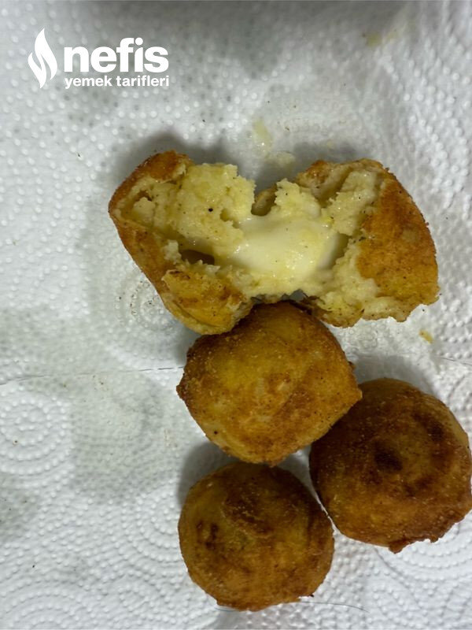

🍽️ 4-6 kişilik⏱️ Hazırlık: 20 dk🔥 Pişirme: 20 dk🏷️ Kahvaltılık Tarifler
Malzemeler
- 3 adet patates
- 3 yemek kaşığı tepeleme un
- 1 yumurtanın sarısı
- Tuz
- Karabiber
- Pulbiber
- 130 gram kaşar peyniri
- Yumurtanın beyazı
- Yarım bardak un
- 1 bardak galeta unu
- Sıvı yağ (1 su bardağından biraz fazla)
Hazırlanışı
- Önce patatesleri haşlıyoruz.
- Patatesler sıcakken pürüzsüz olana kadar eziyoruz.
- 3 yemek kaşığı un ilave ediyoruz.
- Tuz, karabiber, pulbiber ekliyoruz.
- Pürüzsüz olana kadar karıştırıyoruz.
- Patatesli harcımızdan cevizden biraz büyük parçalar alıp yuvarlıyoruz.
- Yuvarladığımız harcı yassıltıp bir parça kaşar koyup yuvarlıyoruz.
- 30-40 dakika kadar buzdolabında bekletiyoruz.
- Dolaptan çıkardığımız patates toplarını önce una, sonra yumurta beyazına en son galeta ununa buluyoruz.
- Derin bir kapta bol ve iyice ısınmış yağda kızartıyoruz.
- Kâğıt havluya çıkardığımız nefis kaşarlı patatesli ikramımızı sıcak sıcak servis ediyoruz (dondurucuda dondurup poşetleyerek dilediğimiz zaman pişirebiliriz)